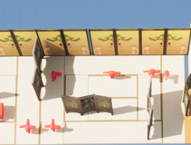
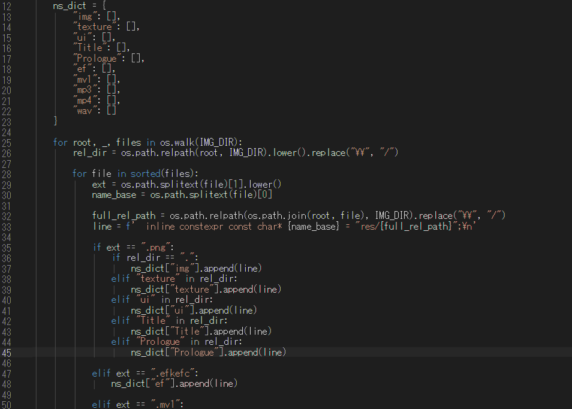
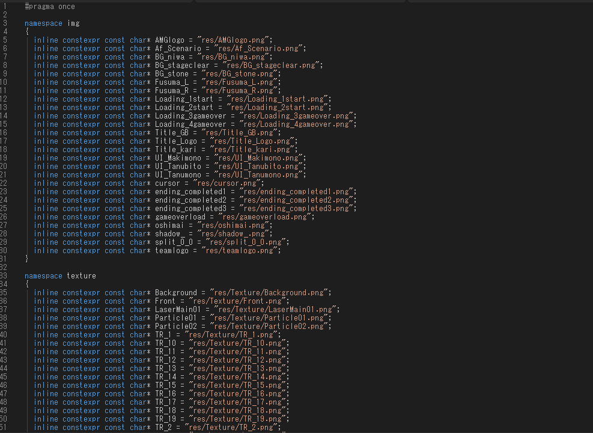

概要

ジャンル
3D変化ステルスアクションゲーム
制作期間
約3ヵ月(2025/11/28～2026/3/23)
製作人数
11名(プランナー2名、プログラマー3名、デザイナー6名)
担当箇所
プレイヤー、開発支援ツール、アニメーション・エフェクト、サウンド、敵巡回、チェックポイント
開発環境
C/C++、Python、Visual Studio、DXライブラリ
ゲームプレイ動画
どんなゲーム？
化狸の義賊ゴエポンを操作し、変化を駆使してお宝を盗み出すステルスアクションゲームです。
全3ステージ構成になっています。
本作のコンセプトは「万能ではない変身で頑張る化狸」。
ゴエポンの変身は決して完璧ではありません。
鋭い敵には見抜かれる弱点があり、さらにお宝を開ける際の物音が敵を引き寄せてしまいます。
常にリスクとリターンを天秤にかけながら進んでいきましょう。
企画書はこちらアピールポイント
モデルの回転
プレイヤーの操作感を向上させるため、モデルの回転処理を実装しました。
プレイヤーの入力から目標方向を求め、現在の向きとの角度差を計算しています。
角度差は-π～πの範囲に正規化することで、向きが大きく離れている場合でも、常に最短方向へ回転するようにしました。
これにより、方向転換の際にモデルが意図せず大きく回転することを防いでいます。
また、目標方向へ一度に向けるのではなく、角度差に補間係数を掛けて少しずつ回転させることで、急に向きが変わらないようにしています。
さらに、目標方向との角度差が小さくなった際には正確に向きを合わせるよう調整しました。
タヌキの回転処理
タヌキ変身システム
タヌキの変身システムでは、入力タイミングによる誤操作の防止を実装しました。
変身ボタンを押した瞬間に変身処理を実行すると、プレイヤーの意図しないタイミングで変身してしまう問題がありました。
そこで、変身ボタンを長押ししている間はすぐに変身処理を実行せず、入力状態を保持するようにしました。
また、長押し中に移動入力が行われた場合は変身をキャンセルすることで、移動操作を優先できるようにしました。
これにより、プレイヤーが意図したタイミングでのみ変身できるようになり、誤操作を防ぎながら快適な操作感を実現しました。
タヌキの変身処理
敵の巡回ルート
敵が設定した巡回ポイントを順番に移動する巡回処理を実装しました。
プランナーがUE5上で配置したマーカーをJSONファイルとして出力し、ゲーム側でJSONを読み込んで巡回ポイントとして利用する仕組みを構築しました。
巡回ルートを変更する際にプログラムのコードを直接変更する必要がなく、マーカーの位置を調整するだけでルートを変更できるようにしています。
巡回処理では、敵と各ポイントとの距離から到着を判定し、到着すると次のポイントへ切り替える処理を実装しています。
また、プレイヤーを見失った場合には、次の巡回ポイントへ向かうようにすることで、敵が自然に巡回行動へ戻れるようにしました。
ゲーム側で柔軟に巡回ルートを調整できる仕組みと、状況に応じて巡回を継続できる敵の行動を実現しています。
1ステージ目の巡回ルート

UE5で配置した巡回マーカー
Pythonによるリソース自動生成ツール
リソース管理の効率化を目的として、Pythonによるヘッダーファイル自動生成ツールを作成しました。
指定したフォルダー内を走査し、画像やモデルなどのリソースファイルを自動で取得して、ファイル名をもとに定数名を生成し、ヘッダーファイルへ出力する仕組みを実装しました。
これまでリソースを追加するたびに、ファイルパスや定数を手作業で記述する必要がありましたが、ツールを実行するだけで必要な情報をまとめて生成できるようにしました。
リソースの追加や削除が発生した場合も、ツールを実行することで最新のヘッダーファイルを生成できるため、手作業による管理の手間を削減しています。
また、記述ミスや更新漏れを防ぎ、リソース管理を効率化できるよう工夫しました。

Pythonコード

生成されたヘッダーファイル